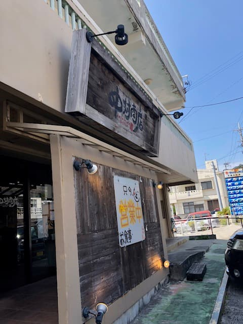
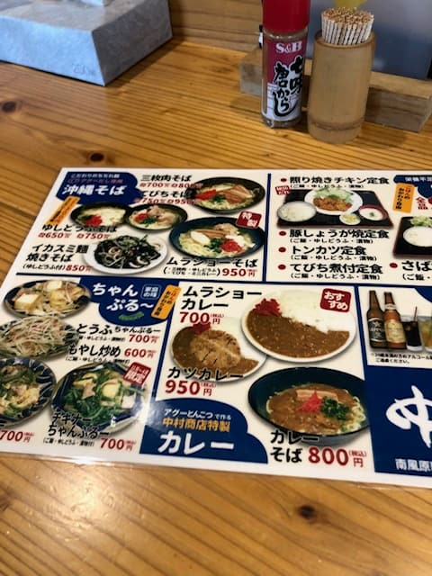
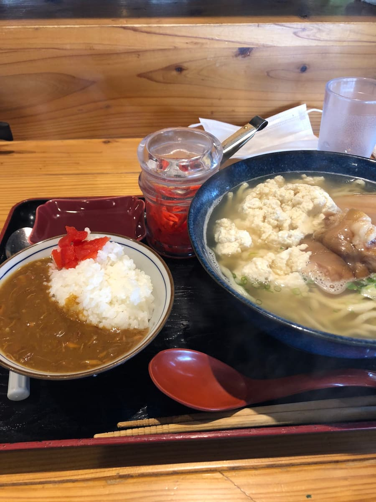

衝浪（糸滿市自殺崖點）前，2023年3月去吃了😊

看菜單，似乎以阿古豬為賣點😁


阿古豬高湯的湯頭，搭配滑溜的中粗麵。配料有沖繩嫩豆腐、豬腳、三層肉、魚板，份量十足(・・) 還附有用阿古豬高湯做的咖哩飯小碟^^;
我沒看菜單上的小字就點了，但確實有寫^^; 我覺得這不是下海前該吃的菜單。吃得好撐。
評分（9分/15分）：這家店的什錦炒（Champuru）系列和定食都可以白飯無限續，是份量相當十足的菜單。普通好吃😊，所以推薦給想吃得過癮的人。
麵：★★★☆☆（3）
湯頭：★★★☆☆（3）
配料：★★★☆☆（3）